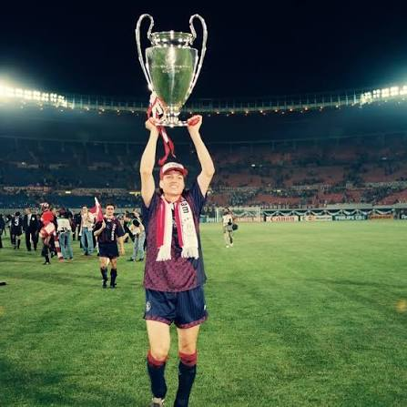

10
Jari Litmanen
De Finse nummer 10
Over mij
Mijn naam is [jouw naam] en ik heb deze website gemaakt over Jari Litmanen. Ik vind voetbal erg interessant en heb gekozen voor Litmanen omdat hij een bijzondere speler en een echte voetballegende is.
Op deze website kun je meer informatie vinden over Jari, zijn carrière en zijn mooiste momenten.
